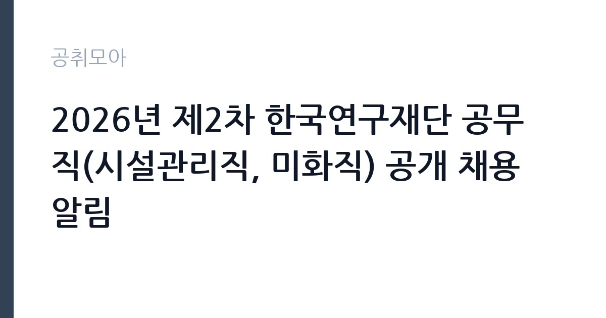

[공공기관] 2026년 제2차 한국연구재단 공무직(시설관리직, 미화직) 공개 채용 알림
한국연구재단 · 대전 · 마감 2026-10-19 (D-21) · 출처 나라일터

한눈에 보는 모집 조건
| 기관 | 한국연구재단 |
|---|---|
| 공고명 | 2026년 제2차 한국연구재단 공무직(시설관리직, 미화직) 공개 채용 알림 |
| 고용형태 | 공무직 |
| 근무지 | 대전 |
| 게시일 | 2026-09-28 |
| 마감일 | 2026-10-19 (D-21) |
지원자격, 이렇게 읽으세요
- 공무직(시설관리직-전기) 1명 공무직(시설관리직-기계) 1명 공무직(미화
- 접수 ~2026-10-19 마감
- 세부 조건은 원문 공고문 확인
시설관리직은 전기와 기계 분야 실무 자격증(전기기사·산업기사, 공조냉동기계 등)과 시설 경력이 평가 핵심이므로 원문 공고문에서 자격요건을 확인하십시오. 미화직은 학력과 경력 제한이 완화되는 경우가 많으나 공단급 기관이라 결격사유와 건강 요건은 동일하게 적용됩니다. 공무직 채용의 함정은 분야별 중복지원 가능 여부와 가점(보훈·장애인) 증빙입니다. 지원 자격과 우대사항, 급여 조건은 첨부파일에 있으므로 모집 알림문이 아닌 공고 전문을 내려받아 확인하십시오.
이 공고의 포인트
이 공고의 매력은 한국연구재단이라는 과학기술계 핵심 기관의 공무직이라는 점입니다. 무기계약직이라 고용 안정성이 보장되고 대전 본원 근무라 근무 환경이 쾌적합니다. 시설관리직은 전기와 기계 각 1명씩 전문 분야를 나눠 뽑아 자격 보유자에게는 경쟁자가 제한적입니다. 미화직 4명은 진입 장벽이 낮아 안정적인 일자리를 찾는 분께 기회입니다. 접수 기간이 21일로 넉넉해 서류를 갖출 시간이 충분합니다.
전형은 어떻게 진행되나
공고와 접수 기간은 9월 28일부터 10월 19일 오후 6시까지 21일간이며 접수처는 온라인 채용 홈페이지입니다. 전형 절차는 서류전형(20배수 선발)과 면접전형 두 단계입니다. 서류에서 20배수를 뽑으므로 기본 요건만 갖추면 면접 기회가 넓습니다. 지원 자격과 급여, 세부 일정은 첨부파일을 참조해야 합니다. 문의는 채용 홈페이지 질의응답 게시판과 채용 전담 콜센터(02-785-2703)로 하면 됩니다.
원문에서 확인한 전형 방식
○ 채용분야: 공무직(시설관리직, 미화직) ※ 연구직 및 공무직(사무지원직)은 별도 공고 참조 1) 채용규모: 총 6명 이내(공무직(시설관리직) 2명, 공무직(미화직) 4명) ※ 각 분야별 세부 채용인원은 첨부파일 참조 ○ 근무지: 한국연구재단 대전 본원 ○ 공고일: 공고 및 접수기간: 2026. 9. 28.(월) ~ 10. 19.(월) 18:00:00까지 ※ 21일 공고 및 접수(초일 불산입) ○ 접수처: https://recruit.incruit.com/nrf2026/ ※ 온라인 접수 ○ 전형절차: 서류전형(20배수) → 면접전형 ○ 지원 자격 및 요건, 우대사항, 급여, 세부 추진일정 등은 첨부파일 참조 ○ 문의처 - [온라인] 채용 홈페이지 내 Q&A 게시판(https://recruit.incruit.com/nrf2026/qna/) - [☎유선] 한국연구재단 채용 전담 콜센터(02-785-2703)
이런 분께 추천해요
- 전기나 기계 설비 자격 보유자에게 시설관리직이 맞습니다. 분야별 1명씩이라 전문성이 직접 평가됩니다.
- 대전에서 안정적인 미화직 일자리를 찾는 분께 권합니다. 진입 장벽이 낮고 공무직 신분이 보장됩니다.
- 서류 부담 없이 면접으로 승부하려는 분께 유리합니다. 20배수 서류 통과 후 면접이 당락을 가릅니다.
지원 전 체크리스트
- 지원 분야(시설관리 전기·기계, 미화)의 자격요건을 첨부파일에서 확인했습니다. 분야별 중복지원 가능 여부도 확인하십시오.
- 온라인 접수처와 마감 시각(10월 19일 18시)을 확인했습니다. 마감일 접속 폭주를 피해 미리 접수하십시오.
- 가점(보훈·장애인·지역인재) 증빙 서류를 확인했습니다. 해당자는 증빙을 접수 기간 안에 제출하십시오.
- 문의처(채용 홈페이지 질의응답·콜센터 02-785-2703)를 저장했습니다. 자격 해석이 애매하면 접수 전에 문의하십시오.
모집 일정과 제출 타이밍
접수 기간이 10월 19일까지 21일로 넉넉합니다. 시설관리직 지원자는 자격증 사본과 경력증명서를 이번 주에 준비하고, 미화직 지원자는 이력서와 자기소개서를 다듬는 데 시간을 쓰십시오. 온라인 접수라 마감일 서버 혼잡이 예상되므로 10월 17일까지 접수를 마치는 것이 안전합니다. 서류전형에서 20배수를 선발하므로 기본 요건 충족이 우선이고, 이후 면접 준비에 집중하시면 됩니다.
직무 이해하기: 공공기관
한국연구재단은 국가 학술과 과학기술 진흥을 이끄는 연구지원 기관으로 대전 본원이 핵심 거점입니다. 시설관리직은 청사 전기설비와 기계설비(공조·급배수·소방)의 점검과 유지보수, 고장 대응과 외주 공사 관리를 맡습니다. 미화직은 청사와 연구지원 공간의 청소와 위생 관리, 행사 지원과 환경 정비를 수행합니다. 연구자와 방문객이 많은 기관이라 안전 의식과 친절한 응대가 함께 요구됩니다.
자기소개서 작성 팁
시설관리직 지원서는 보유 자격증과 담당했던 설비 규모를 구체적으로 쓰십시오. 전기 용량과 공조 면적, 고장 대응 실적 같은 수치가 설득력을 높입니다. 미화직은 성실함과 체력, 위생 관리 경험을 중심으로 쓰십시오. 연구지원 기관의 일원이라는 자부식을 한 문장으로 보여주면 좋습니다. 공무직 전형이라 직무 적합성과 장기 근무 의지가 서류의 핵심입니다.
면접 준비 포인트
시설관리직 면접에서는 설비 고장 대응 경험과 안전 수칙 준수를 집중적으로 물을 가능성이 큽니다. 정전과 누수 같은 비상 상황 대처 사례를 순서대로 말할 수 있어야 합니다. 미화직은 성실 근무와 협업 경험을 묻는 질문에 대비하십시오. 공무직으로서의 장기 근무 의지와 대전 본원 출퇴근 계획을 묻는다면 구체적으로 답변하십시오. 기관의 역할(연구지원)에 대한 기본 이해를 보여주는 것이 중요합니다.
급여·근무조건 읽는 법
정확한 급여는 공고문 첨부파일에서 확인하셔야 합니다. 한국연구재단 공무직의 보수는 재단 내규에 따른 월급제로 지급되며 4대보험과 퇴직금, 명절수당과 정액급식비 등 복리후생이 적용되는 것이 일반적입니다. 2024년에도 미화·시설관리 공무직 채용이 있었던 만큼(출처: 채용공고 게시) 유사한 처우 체계가 유지될 것으로 보이나, 이번 공고 첨부파일의 금액이 최종 기준입니다. 출처가 확인되지 않은 금액을 전제로 삼지 마시고 반드시 공고 전문을 내려받아 확인하십시오.
자주 묻는 질문
- 연구직과 사무지원직도 같이 뽑나요?
이번 공고는 공무직 시설관리직과 미화직만 해당되며 연구직과 사무지원직은 별도 공고로 안내됩니다. 본인에게 맞는 공고를 골라 지원하십시오. - 접수는 어디서 하나요?
온라인 채용 홈페이지에서만 접수합니다. 방문과 우편 접수는 받지 않으므로 마감 시각인 10월 19일 오후 6시 전에 온라인 제출을 완료하십시오. - 서류 20배수라는 것은 무엇인가요?
서류전형에서 최종 선발 인원의 20배수를 면접 대상자로 뽑는다는 뜻입니다. 서류 문턱이 넓은 대신 면접 경쟁이 치열하므로 면접 준비가 중요합니다.
함께 보면 좋은 공고
[공공기관] 한전KPS(주)강원충북전력지사 단기노무원(강릉지점 차량순시) 채용공고(31차) — 마감 2026-10-01[공공기관] 한국폴리텍대학 광명융합기술교육원 대학운영직(경비원) 채용 공고 — 마감 2026-10-06[공공기관] (재)강원역사문화연구원 2026년 정규직 채용 공고 — 마감 2026-10-09출처: 나라일터 공개정보를 바탕으로 공취모아가 정리한 안내글입니다. 모집 조건·일정은 변경될 수 있으니 지원 전 반드시 원문 공고문을 확인하세요. 본 글은 정보 제공용이며 합격을 보장하지 않습니다.